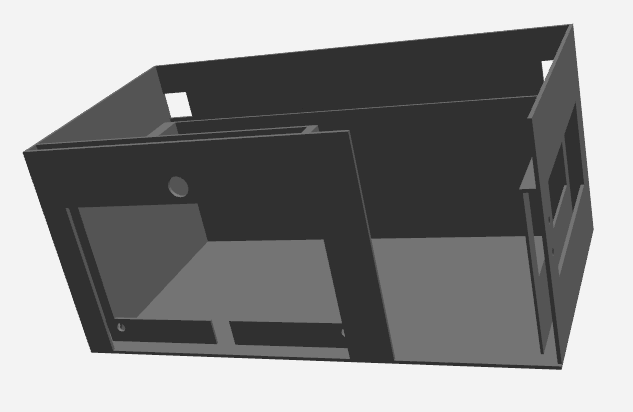
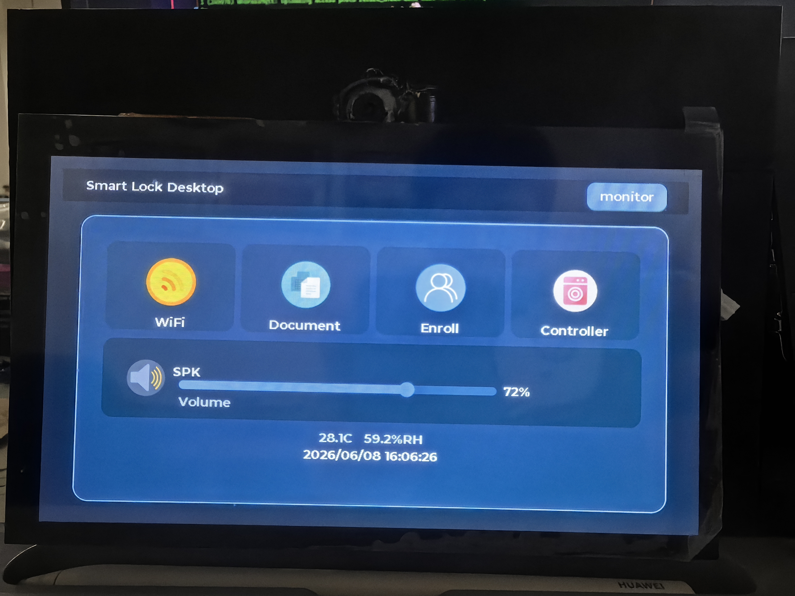
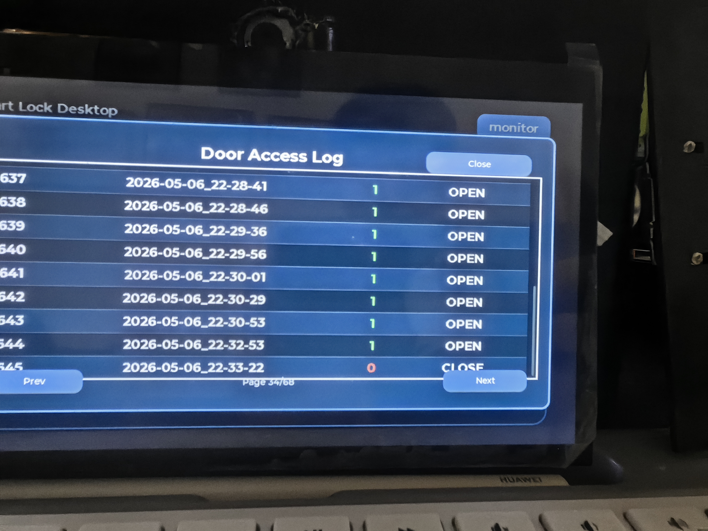

ESP32-P4 边缘 AI 智能门锁
从模型训练到 FreeRTOS 多任务调度的完整边缘 AI 系统

项目概述
本项目基于乐鑫最新推出的 ESP32-P4 芯片，设计并实现了一套完整的边缘 AI 智能门锁系统。系统集成了人脸检测、活体检测、人脸识别三大核心 AI 功能，同时支持 WiFi 联网、MQTT 智能家居控制、语音交互等多种特性，实现了从端侧推理到云端联动的完整闭环。
我在项目中主要负责以下工作：
- 活体检测模型的训练与量化部署（MobileNetV1 ×0.5，FP32→INT8）
- 数据增强策略设计，定向模拟 ESP32-P4 ISP 的 AWB 漂移问题
- FreeRTOS 多任务调度框架的搭建与优化
- WiFi/MQTT 网络模块的开发与调试
- 系统集成测试与性能调优
核心特性
| 功能 | 实现方式 | 技术指标 |
|---|---|---|
| 人脸检测 | esp-dl CNN 模型 | INT8 量化，实时检测 |
| 活体检测 | MobileNetV1 ×0.5 | ~160KB 模型，~40ms 推理 |
| 人脸识别 | esp-dl 特征提取 + 余弦匹配 | 128 维特征向量 |
| 语音交互 | WakeNet + 流式 ASR + LLM + TTS | ESP-SR + 火山引擎 |
| 智能家居 | MQTT 协议 | 自建 Broker，JSON 上报 |
| 远程监控 | JPEG 硬件编码 + HTTP POST | 10 FPS 实时传输 |
3D 外壳设计
门锁外壳采用 3D 打印技术制作，经过多次迭代优化，实现了紧凑美观的外观设计。外壳内部预留了摄像头、显示屏、传感器等模块的安装位，确保所有组件能够稳固装配。

外壳设计要点：
- 摄像头窗口：正面预留摄像头开口，确保人脸识别视野无遮挡
- 显示屏嵌入：LCD 显示屏嵌入外壳，显示识别结果和状态信息
- 散热设计：关键芯片位置预留散热通道，避免长时间运行过热
- 安装便利：外壳支持壁挂安装，方便固定在门上
人脸识别模块
人脸识别是整个系统的核心功能之一。系统采用 esp-dl 框架进行端侧推理，通过 MIPI CSI 接口摄像头采集图像，经过人脸检测、活体检测、特征提取三个阶段，最终完成身份验证。

人脸识别流程详解：
- 图像采集：通过 MIPI CSI 接口摄像头获取 1024×600 RGB565 格式的原始图像
- 人脸检测：使用 esp-dl CNN 模型定位图像中的人脸区域，输出边界框坐标
- 活体检测：对检测到的人脸区域进行活体判断，防止照片/屏幕攻击
- 特征提取：提取 128 维人脸特征向量，与数据库中已注册的特征进行余弦相似度匹配
- 身份验证：当相似度超过阈值时，判定为已注册用户，触发开锁动作
活体检测模型训练
活体检测是防止照片、视频等攻击手段的关键环节。我们采用 MobileNetV1 ×0.5（宽度乘数 0.5）作为基础模型，该模型仅有约 37.6K 参数，INT8 量化后约 160KB，非常适合在资源受限的嵌入式设备上运行。
数据增强策略
在模型训练过程中，我们发现 ESP32-P4 的 ISP（图像信号处理器）会对图像产生特定的颜色偏移，特别是 AWB（自动白平衡）模块会导致 R/B 通道增益漂移。为了使模型在实际部署时具有更好的鲁棒性，我们设计了定向模拟 ISP 行为的数据增强策略：
| 增强方法 | 是否使用 | 原因说明 |
|---|---|---|
| R 通道增益 | ✅ 使用 | AWB R_gain 漂移是确认的根因，需要定向模拟 |
| B 通道增益 | ✅ 使用 | AWB B_gain 同步漂移，与 R 通道协同增强 |
| Hue 色相旋转 | ❌ 不使用 | 色相旋转 ≠ AWB 通道增益，机制不同 |
| Saturation 饱和度 | ❌ 不使用 | ISP ACC 模块不活跃，无需模拟 |
量化部署流程
模型训练完成后，需要将 FP32 精度的模型量化为 INT8 格式，以适应 ESP32-P4 的硬件加速能力。整个流程如下：
WiFi 控制模块
系统集成了完整的 WiFi 连接管理功能，采用单例模式设计，支持 NVS Flash 持久化配置和自动断线重连。通过 WiFi 连接，门锁可以与云端 MQTT Broker 通信，实现远程控制和状态上报。

WiFi 模块主要功能：
- 连接管理：支持 STA/AP 模式切换，自动保存已连接的 WiFi 配置
- 状态监控：实时监控连接状态，支持断线自动重连
- 安全认证：支持 WPA/WPA2/WPA3 等多种加密方式
- NVS 存储：WiFi 配置持久化到 NVS Flash，重启后自动恢复
控制中枢
整个系统的控制中枢基于 FreeRTOS 实时操作系统构建，采用事件驱动的多任务架构。ESP32-P4 为双核 RISC-V 处理器，我们将不同类型的任务分配到不同核心，充分发挥硬件性能。

任务分配策略：
| 任务名称 | 运行核心 | 功能描述 |
|---|---|---|
| WhoFetchNode | Core 0 | 摄像头帧采集，负责从 MIPI CSI 接口获取图像数据 |
| WhoDetect | Core 1 | 人脸检测 CNN 推理，运行 esp-dl 量化模型 |
| WhoRecognitionCore | Core 1 | 人脸识别特征提取，计算 128 维特征向量 |
| WhoFrameLCD | Core 0 | LCD 显示渲染，实时显示摄像头画面和识别结果 |
| WhoRemoteMonitor | Core 0 | JPEG 编码 + HTTP 上传，实现远程监控功能 |
| WiFi/MQTT | Core 0 | 网络通信，处理 WiFi 连接和 MQTT 消息收发 |
| VoiceCmd | Core 0 | 语音唤醒 + ASR + LLM，处理语音交互功能 |
任务间通信机制：
- FreeRTOS 队列：用于任务间的数据传递，如摄像头帧数据从采集任务传递到检测任务
- 事件标志组：用于任务状态同步，如通知任务暂停、恢复或停止
- 互斥锁：保护共享资源，如 LCD 显示缓冲区、MQTT 连接句柄等
通信记录与调试
在开发过程中，我们建立了完善的日志系统和通信记录机制，方便调试和问题定位。系统会记录所有的 MQTT 消息、识别结果、错误信息等，便于后期分析和优化。

调试历程与经验总结：
| 版本 | 问题现象 | 根因分析 | 解决方案 |
|---|---|---|---|
| V1 | 输出结果随机 | ESP-PPQ 量化时 Softmax 索引交换 | 交换 data[0]/data[1] 顺序 |
| V2 | 真人被误判为假 | 预处理对齐不一致 | 统一训练与推理的预处理流程 |
| V2.2 | 距离变化导致识别漂移 | ISP AWB 自动调节引起颜色偏移 | 采用亮度均值减法进行补偿 |
| V5 | 鲁棒性显著提升 | R/B 通道增益增强策略 | 定向模拟 AWB 漂移，增强泛化能力 |
关键教训
- 每次只改一个变量：V2 版本同时修改了预处理和索引，导致真正根因被掩盖，浪费了大量调试时间
- 增强要匹配硬件：ISP 不活跃的模块不需要增强，活跃的（如 AWB）要定向模拟，否则会引入噪声
- 训练-推理一致性：裁剪方式、归一化方式必须完全一致，否则会导致模型在实际部署时性能下降
落地成果
技术栈
- 芯片： ESP32-P4（双核 RISC-V, 512KB SRAM）
- 开发框架： ESP-IDF v5.5.3
- AI 推理： esp-dl ~3.2.0
- 活体模型： MobileNetV1 ×0.5, INT8 ~160KB
- 任务框架： FreeRTOS（事件驱动 + 任务组管理）
- 云服务： 火山引擎 ASR/LLM + 自建 MQTT Broker